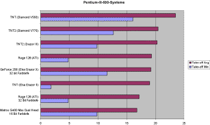

Ergebnisse des Frameraten-Tests
Viele Computer-Zeitschriften machen Benchmark-Tests, Prozessor-Tests,
Grafikkarten-Tests. Wie relevant diese Testergebnisse für den FS 2000
sind, weiß man aber nie so genau. Deshalb haben wir hier unsere eigene
Testreihe gemacht. Rund 40 Teilnehmer haben beim Frameraten-Test
mitgemacht. Zusammenfassend kann man sagen: Wer mit durchschnittlich 20
fps durch die Gegend fliegt, kann mehr als zufrieden sein.
Ich habe nicht alle eingesandten Ergebnisse in die Auswertung mit
aufgenommen. Der Grund lag meistens darin, dass die Tageszeit nicht auf Dämmerung
eingestellt war - bei Tag sind die Frameraten wesentlich besser und
deshalb nicht vergleichbar. Charakteristisch für alle Teilnehmer war, daß
bis auf zwei alle mindestens 128 MByte Hauptspeicher hatten. Die zwei
Teilnehmer mit nur 64 MByte Hauptspeicher hatten bei den Frameraten Einbrüche
bis auf 1 fps. Bei mehr als 128 Mbyte Hauptspeicher sind bei den
Messergebnissen keine Verbesserungen festzustellen.
Alle hier gezeigten Grafiken beziehen sich auf den Test 1 "Meigs
Take-off" bei Dämmerung und wolkenfreiem Himmel. Sofern nichts
anderes vermerkt ist gilt immer:
- 128 MByte Haupspeicher
- Auflösung 1024 x 768, Farbtiefe 16 bit
- Tageszeit: Dämmerung, Bildqualität: 5
Ich habe lange überlegt, wie sich die Ergebnisse am besten präsentieren
lassen. Da das Datenmaterial sehr umfangreich ist, habe ich nur einige
charakteristische Trends grafisch aufbereitet. Wer die kompletten Meßreihen
sehen möchte, kann sich die Excel-Tabelle Frameraten.xls (Excel-95-Format) herunterladen. Wer selbst
vergleichen möchte und den Test noch nicht gemacht hat: die Datei Frate_test.zip
enthält die Anleitung, Flugdateien, Testvideos und den Frameraten-Counter.
Athlon ist überlegen
Der größte Teil aller FS-2000-Flieger fliegt mit Systemen der
Leistungsklasse 500 MHz. Die durchschnittlichen Frameraten beim Abheben in
Meigs bewegen sich hier zwischen 15 und 20 fps. Die Pentium-III-Systeme
pendeln dabei um einen Mittelwert von ca. 19 fps, brechen aber schon beim
simplen Geradeausrollen auf 5 fps ein (von einer Ausnahme abgesehen).

(Klicken zum Vergrössern)
Bild 1: Systeme mit Pentium III, 500 MHz und 128
MByte Hauptspeicher bei 1024 x 768 und 16 bit Farbtiefe, sofern nichts
anderes vermerkt ist. Daß hier ein TNT schneller ist als TNT2 ist
vermutlich ein Ausrutscher.
Die Führungsposition des Grafikprozessors TNT vor dem TNT2 ist
sicherlich ein Einzelfall und nicht repräsentativ. Aber die Zahlen hier
sind eben nicht manipuliert sondern spiegeln die Unwägbarkeiten des tatsächlichen
Lebens wider - und die Testsysteme haben ja auch nicht nebeneinander
gestanden sondern sind von verschiedenen Testern unterschiedlich bedient
worden. Das mag zu einer gewissen Streuung führen.
Fünf stolze Besitzer von Athlon-Systemen mit 550 MHz und einer mit 600
MHz konnten insgesamt bessere Ergebnisse als die Pentium-Flieger
vorweisen. Der Athlon zaubert durchschnittlich rund 20-25, in einem Fall
sogar 30 Frames pro Sekunde auf den Schirm. Auch die Einbrüche sind bei
den Athlon-Systemen nicht so stark - sie gehen nur auf ca. 9 fps zurück.
Den größten Einbruch hat hier ausgerechnet die teuerste Grafikkarte zu
verzeichnen: eine 600 Mark teure Creative GeForce Annihilator Pro mit dem
brandneuen GeForce256-Chip von nVidia.

(Klicken zum Vergrössern)
Bild 2: Athlon-Systeme sind recht flott. Die sündhaft teuren Karten mit
dem GeForce 256-Chip sind aber zumindest im FS 2000 nicht die schnellsten.
Aufrüsten lohnt sich - ab 400 MHz
Die langsameren Systeme haben eines gemeinsam: Die starken Einbrüche.
Kurvenfliegen und -fahren auf Taxiways sind mit diesen Systemen schwierig,
da hier nur 3-4 fps zu erwarten sind. Trotzdem - Systeme mit 400 MHz sind
durch eine gute Grafikkarte noch flugtauglich zu machen. Die V 770 von
Diamond oder die Rage-128-Karten von ATI kosten um 300 Mark und sorgen für
durchschnittliche Frameraten um 15 fps - auch bei Kurvenflügen.
Allerdings muß man bei schnellen Manövern oder Kurvenflügen Einbrüche
auf 5 fps in Kauf nehmen, was aber auch mit einem Pentium III 500
passieren kann (siehe Bild 1). Als Schnäppchen kann man die
Celeron-Systeme bezeichnen, die den Pentium III mit gleicher Taktrate
praktisch nicht nachstehen.
Die Grafikkarte entscheidet
Insgesamt kann man sagen, daß die Grafikkarte einen größeren Einfluß
auf das Meßergebnis hat als der Prozessor. Mehr als 600 Mark sollte man für
einen Prozessor z. Zt. auf keinen Fall ausgeben. Pentium III mit 600 MHz
bringen zwar geringfügige Verbesserungen, diese muß man jedoch mit einem
Aufpreis von rund 600 Mark erkaufen. Bild 3 zeigt einen Vergleich
verschiedener Systeme mit Rage-128-Grafik.

(Klicken zum Vergrössern)
Bild 3: Alle Systeme hier haben eine ATI-Grafikkarte mit Rage-128-Chip.
Auflösung 1024 x 768, Farbtiefe 16 bit, sofern nichts anderes angegeben
ist.
Vor dem Kauf muss gewarnt werden
Was sollte man auf keinen Fall kaufen? - Neben den erwähnten
hochgetakteten Prozessoren bringen auch die von der Fachpresse so
hochgelobten Grafikkarten mit dem GeForce 256 im FS 2000 keine merkliche
Verbesserung. Hauptspeicher-Aufrüstungen, die über 128 MByte hinausgehen
führen ebenfalls nicht zu merklich flüssigerem Spielablauf. Weniger als
128 MByte sollten's aber auch nicht sein, da sonst die gefürchteten
Pausen beim Umschalten der Ansichten auftreten. Am besten bedient ist mal
wohl mit einem gut konfigurierten 500-MHz-System der 2000-Mark-Klasse.
Befindet sich darin eine TNT2-Grafik oder Rage-128-Grafikkarte, dann kann
eigentlich nicht mehr viel schief gehen. Und wenn Saturn-Hansa, Mediamarkt
oder Karstadt zum gleichen Preis ein Athlon-System anbieten, dann ist die
Wahl klar: Athlon ist das bessere Triebwerk!
Joachim Kroll
Joachim_Kroll@gmx.de
Danke für's mitmachen !
09.Januar 2000


{kind=link}
{kind=link}
{kind=link}
{kind=link}
{kind=link}